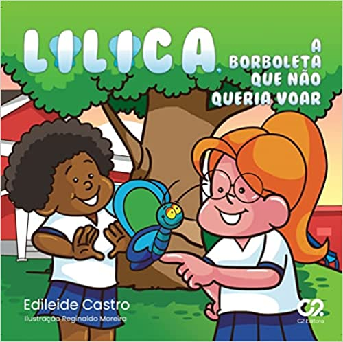
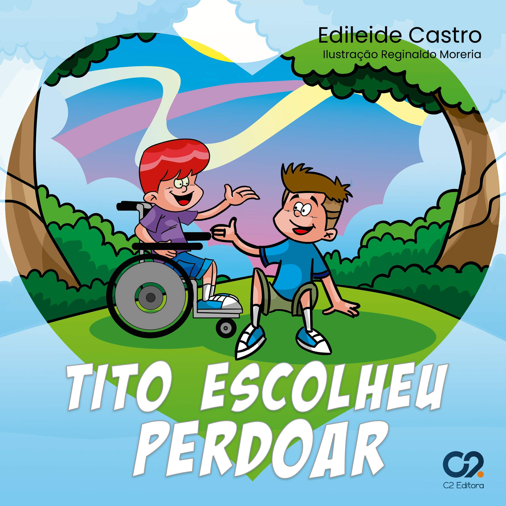
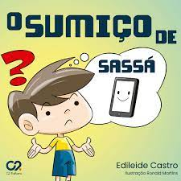

Projeto "Cultivando Valores na escola e família".
A leitura sempre desenvolveu um papel importante na vida das pessoas, uma fonte de conhecimento e lazer. Sua prática é essencial para a evolução pessoal. Por isso, é imprescindível introduzi-la na infância, a fim de estimular as crianças a cultuarem esse hábito.
Para que isso aconteça, família e escola precisam caminhar juntas. Pensando nisso, foi criado o projeto "Cultivando Valores na escola e família" no ano de 2019, com o intuito de ensinar valores essenciais para o avanço dos pequenos cidadãos.



O projeto contou com a participação da autora Edileide Castro de Santo Antônio de Jesus - BA.
Os livros que fazem parte da coleção são: Lilica, a borboleta que não sabia voar; Tito escolheu perdoar; O sumiço de Sassá. São leituras com temas pertinentes que devem ser ensinados como o amor, perdão, autoaceitação, autoestima, o tempo dedicado a família e a tecnologia.
Nota da autora
"Foi um privilégio ver no papel e acessível a milhares de crianças e familiares, valores essenciais para se viver bem. Amo esse projeto!"